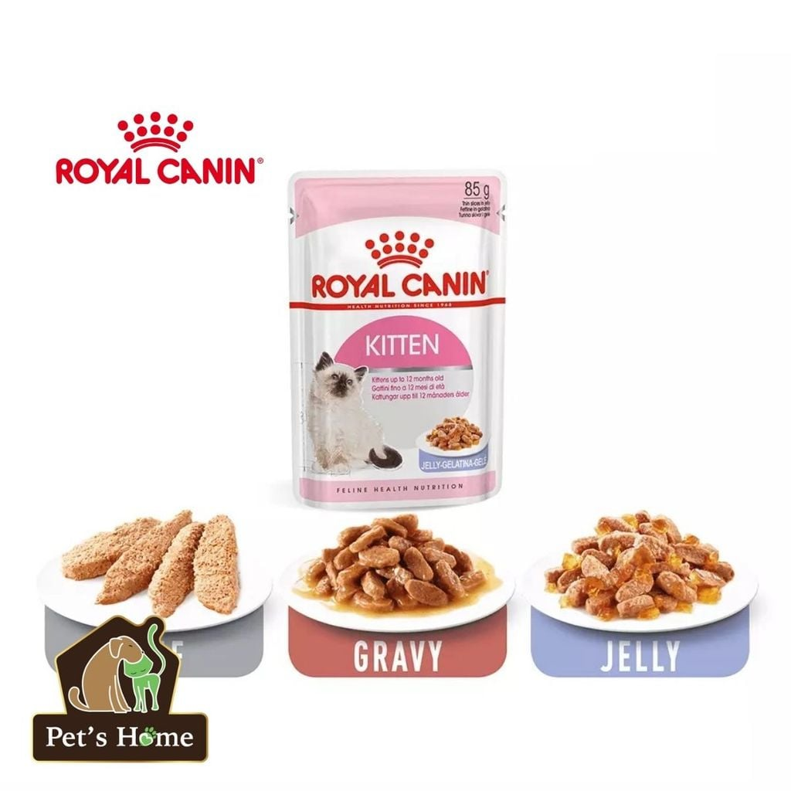
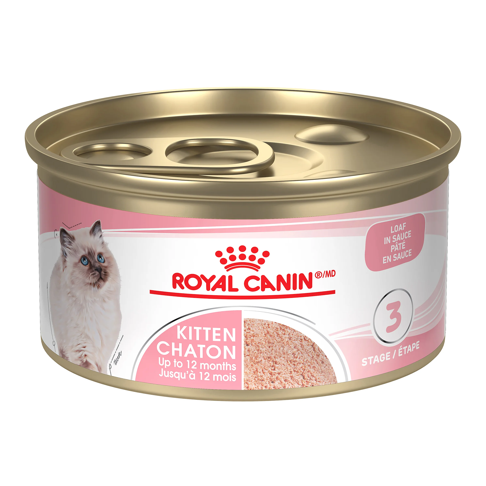

Pate Cho Mèo Con Royal Canin Kitten 85g (loaf, jelly, gravy)
35.000đ
Còn hàng: 120 sản phẩm


35.000đ
Còn hàng: 120 sản phẩm
Thương hiệu: Royal Canin. Phù hợp cho: Mèo (mèo mẹ đang mang thai, cho con bú và mèo con đến 12 tháng tuổi). Pate mèo con Royal Canin Kitten Instinctive là sản phẩm được thiết kế dành riêng cho mèo dưới 12 tháng tuổi. Pate Royal Canin Kitten Instinctive chứa các thành phần trích xuất thịt, sữa và các khoáng chất thiết yếu nhằm hỗ trợ tăng cường hệ thống miễn dịch cho mèo con, thúc đẩy chúng trưởng thành khỏe mạnh. Thức ăn cho mèo ROYAL CANIN được tạo ra với sự cân bằng tối ưu giữa các protein, chất béo và carbohydrate để tăng sự ngon miệng, bổ sung dinh dưỡng hoàn hảo. Pate mèo này còn phù hợp với mèo mẹ đang mang thai và trong giai đoạn cho con bú.
⭐⭐⭐⭐⭐ Sản phẩm rất tốt!